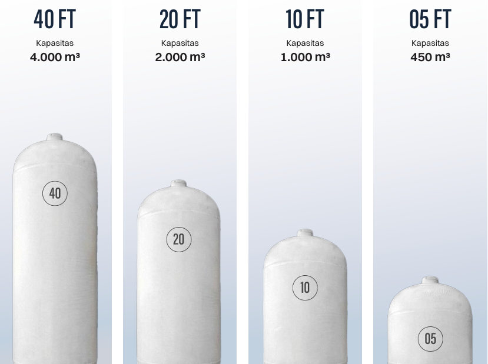

Portofolio solusi energi Compressed Natural Gas (CNG) dari hulu ke hilir, dirancang khusus untuk meningkatkan efisiensi dan dekarbonisasi operasional pabrik Anda.
.jpeg)
BUMIGAS mendistribusikan Compressed Natural Gas berkualitas tinggi langsung ke lokasi industri Anda menggunakan armada Mobile Tube Trailer. Kami mengelola rantai pasokan dari stasiun pengisian gas induk (Mother Station) terintegrasi untuk menjamin pasokan gas kontinu dengan tekanan dan kemurnian yang stabil.
Kami menyediakan layanan rekayasa teknik (engineering) lengkap untuk mendesain jalur pipa gas internal pabrik, memodifikasi burner boiler existing agar siap menerima gas alam, serta menginstalasi stasiun penurun tekanan otomatis (Pressure Reducing System / PRS).
.jpeg)

Kerja sama dengan BUMIGAS menjamin pemeliharaan preventif (preventive maintenance) fasilitas gas secara berkala tanpa biaya tambahan. Stasiun PRS kami dilengkapi perangkat telemetri IoT terenkripsi yang memantau tekanan, temperatur, dan volume gas di site Anda secara real-time.
Dengan dukungan armada GTM yang tersertifikasi, kami menyediakan berbagai pilihan kapasitas penyimpanan untuk menyesuaikan dengan kebutuhan operasional dan ketersediaan lahan di lokasi pelanggan.

Skema distribusi CNG kami dirancang untuk menghadirkan pasokan energi yang efisien, aman, dan berkelanjutan melalui proses yang terintegrasi, mulai dari pengolahan gas, distribusi, transportasi, hingga penyesuaian tekanan di lokasi pelanggan. Pendekatan ini memungkinkan operasional berjalan lebih stabil dengan dukungan sistem yang andal dan sesuai kebutuhan industri.
Sumber gas berasal dari Kangean Energy Indonesia Ltd. / Pertagas Niaga. Gas alam dari jaringan pipa yang awalnya bertekanan 20 – 40 bar kemudian dikompresi hingga menjadi 200 – 250 bar di Mother Station PT Bumigas Mitra Sejahtera.
Pengiriman CNG ke lokasi pabrik dilakukan dengan menggunakan truk armada khusus yang di atasnya dilengkapi tabung GTM (Gas Transport Module) berstandar keselamatan tinggi dengan variasi ukuran 5", 10", 20", dan 40".
Pelanggan industri membutuhkan gas bertekanan rendah (1.5 – 4 barg). Kami memasang unit Pressure Reducing System (PRS) di tempat pelanggan untuk menyesuaikan dan mengontrol tekanan output secara presisi sesuai kebutuhan mesin industri.
Untuk memastikan gas alam dapat digunakan dengan aman dan efisien pada peralatan industri Anda, kami menerapkan skema distribusi on-site yang terintegrasi. Proses ini meliputi:
Penggunaan Buffer Tube dengan kapasitas 5 FT hingga 10 FT sebagai cadangan pasokan di lokasi.
Melalui Pressure Reducing System (PRS), tekanan gas diturunkan dari tekanan tinggi menjadi tekanan kerja yang sesuai dengan spesifikasi mesin Anda.
Gas dialirkan menuju pipa existing terdekat untuk mendukung aktivitas operasional tanpa hambatan. Jika belum terdapat pipa gas yang menuju equipment pelanggan, Maka BMS bisa memberikan layanan desain dan pembuatan jalur pipa gas dengan skema yang disepakati bersama.
Ilustrasi Skema Distribusi On-Site: Buffer Tube (10 FT & 5 FT) ➔ Pressure Reducing System (PRS) ➔ Pipa Existing
Tim analis energi kami siap melakukan audit konsumsi energi solar/LPG/batubara existing di pabrik Anda, memproyeksikan efisiensi biaya bulanan, serta menyusun skema proposal konversi tanpa kompromi.